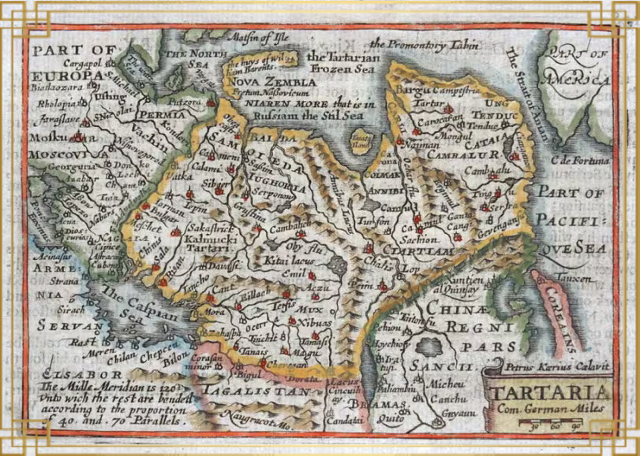
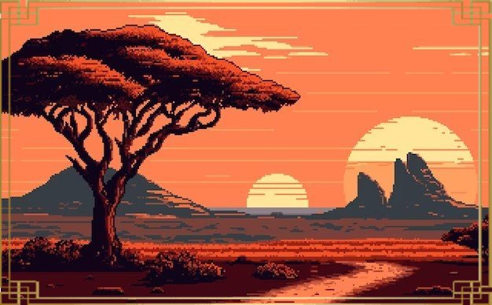
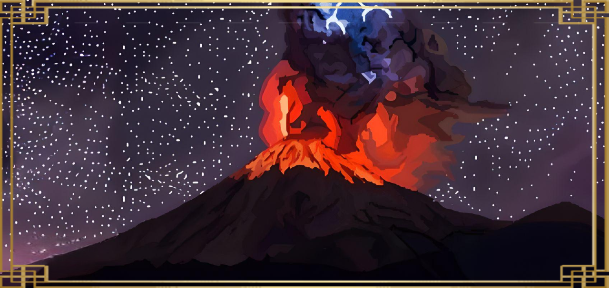
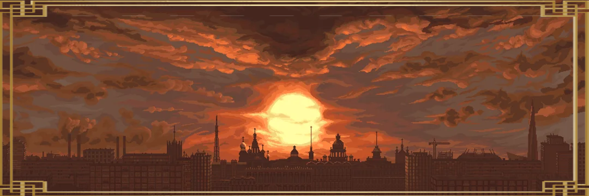

Path of Tartaria
RESUMEN
Path of Tartaria es una aventura de plataformas en 2D que te pondrá en la
piel del personaje público Mr Tartaria y te llevará a revivir algunas de sus emocinantes
historias repartidas en tres diferentes niveles.

NIVELES
ÁFRICA
Viaja a las tierras africanas en las que hombres se convierten en leones y te sentirás amenazado por las tribus locales. Descubre secretos ancestrales y afronta los desafíos del continente olvidado.
POPOCATÉPETL
Escala el Popocatépetl con la lengua de fuego y apacigua el volcán que amenaza al mundo. Pídele ayuda a los chamanes y encuentra refugio para evitar las amenazas de la selva Mexicana.
TARTARIA
Recorre la mítica civilización perdida de Tartaria en busca del cubo de la cuarta dimensión y vive la experiencia que te espera dentro de él. Adéntrate en un mundo de misterios y poder oculto.
PLAYLIST
Sumérgete en la atmósfera mística de Path of Tartaria con nuestra playlist oficial
CONTACTO
¿Preguntas sobre Path of Tartaria? ¿Quieres compartir tu experiencia? ¡Contáctanos!